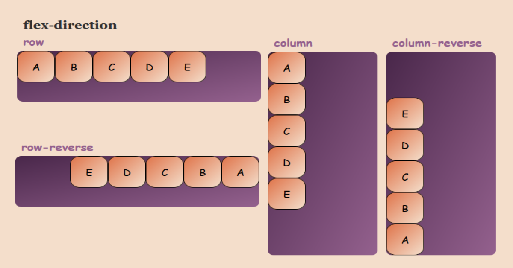
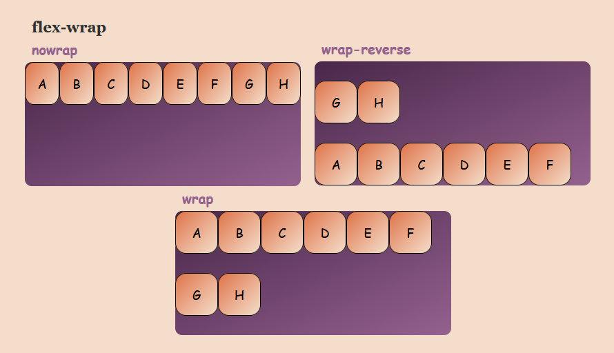
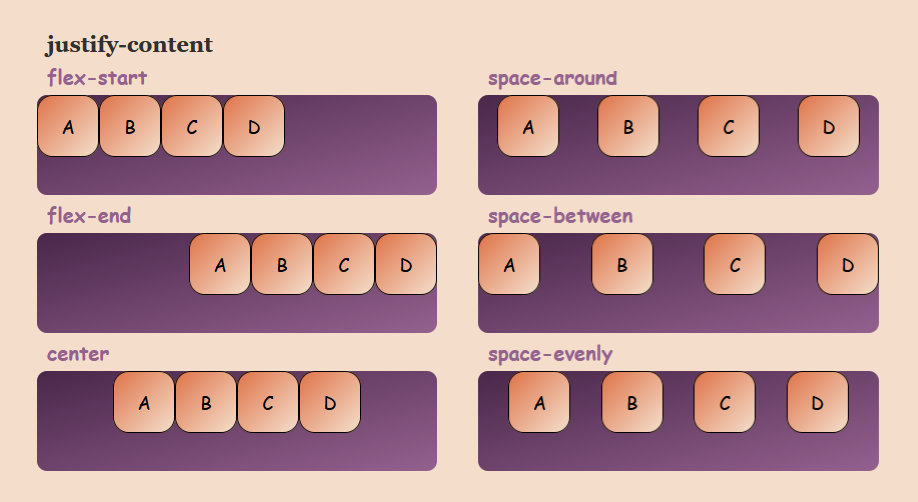
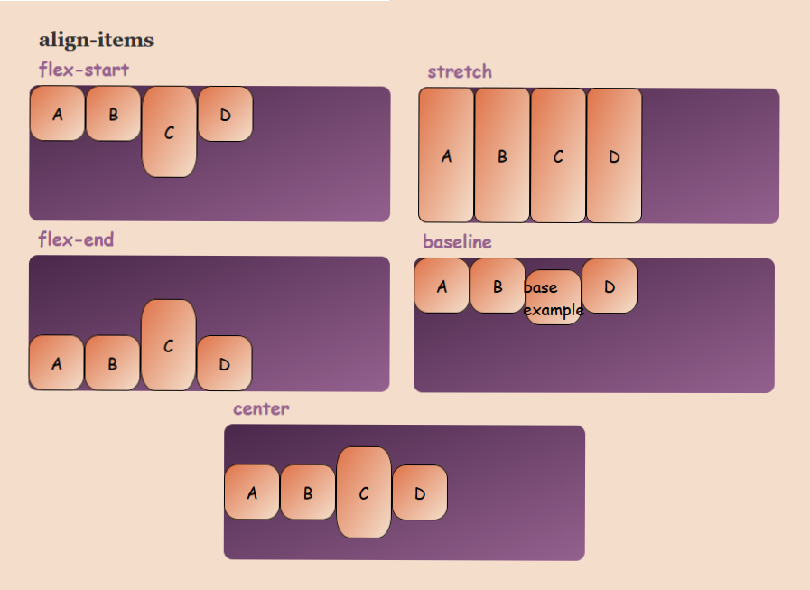
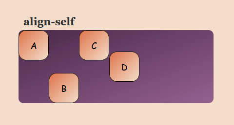
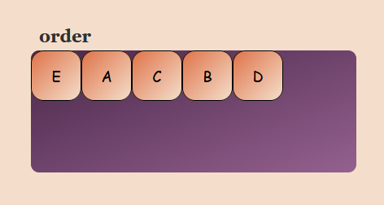
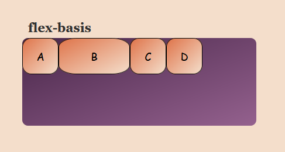
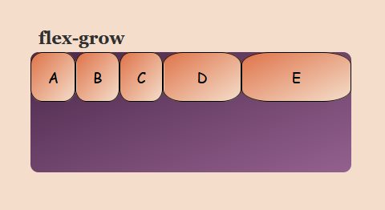
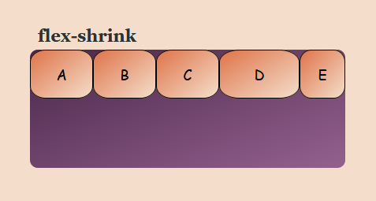

Flexbox
<div class="flex-container">
<div class="flex-child">A</div>
<div class="flex-child">B</div>
<div class="flex-child">C</div>
...
</div>
Flex-родитель (контейнер)
Внутри flex-контейнера будут автоматически создаватся flex-потомки. Если явно им не задавать фикс. высоту, а у родителя будет свободное пространство по вертикали, то flex-потомки будут растягиваться по вертикали.
.flex-container {
display: flex | inline-flex;
}
flex- шириной 100% (как блочный элемент)inline-flex- ширина по котенту (как inline-block)
flex-direction
Направление flex-оси.
.flex-container {
flex-direction: row* | row-reverse | column | column-reverse;
}
flex-wrap
ПЕРЕНОС flex-потомков.
По ум* не переносятся (nowrap). Если элементы не помещаются, то они всё-равно будут в одну строку, у них будет уменьшаться ширина, даже если её размер был задан. Для column не имеет смысла.
.flex-container {
flex-wrap: nowrap* | wrap | wrap-reverse;
}
flex-flow
Краткая запись flex-direction | flex-wrap;
.flex-container {
flex-flow: row wrap;
}
justify-content
РАСПРЕДЕНИЕ флекс-элементов вдоль ФЛЕКС-оси Актуально, при наличии свободного пространства вдоль ФЛЕКС-оси
.flex-container {
justify-content: flex-start* | flex-end | center | space-around | space-between | space-evenly;
}
align-items
ВЫРАВНИВАНИЕ флекс-элементов по ПОПЕРЕЧНОЙ ЛИНИИ (противоположной flex-оси). Актуально, при наличии свободного пространства вдоль поперечной оси, либо когда высота флекс-элементов разная
.flex-container {
align-items: stretch* | flex-start | flex-end | center | baseline;
}
align-content
ВЫРАВНИВАНИЕ РЯДОВ флекс-потомков вдоль поперечной оси. Актуально, при наличии нескольких рядов flex-потомков (должно стоять свойство flex-wrap: wrap) и наличии свободного пространства по попечерной оси флекс контейнера. Не имеет смысла при flex-wrap: nowrap;

.flex-container {
align-content: flex-start* | flex-end | center | stretch | space-between | space-around;
}
Flex-потомок
Ширина, высота, внутренние отступы и рамки для флекс-контейнеров и флекс-элементов работают как обычно: общий размер элементов складывается из этих компонентов. Это поведение так же можно менять с помощью свойства box-sizing.
Есть и несколько важных отличий:
- Флекс-элементы, в отличие от блочных элементов, не растягиваются на всю ширину контейнера по умолчанию;
- На флекс-элементы не действует свойство float.
margin и флекс-элементы
- внешние отступы не схлопываются, ни по горизонтали, ни по вертикали;
- внешние отступы не выпадают, ни из флекс-контейнера, ни из флекс-элементов;
- значение margin: auto получило премию журнала Форбс в номинации «Самое влиятельное значение CSS-свойства внутри флекс-контейнера». При значении auto свойство justify-content, align-items и align-self ломается.
- При row, если задать флекс-потомку margin-left: auto, то он прижмется к правому краю контейнера.
- При column, если задать флекс-потомку margin-top: auto, то он прижмется ко дну контейнера.
Все свойства, которые рассмотрены далее придумали для того, чтобы не задавать фиксированные размеры флекс-элементам, а чтобы они адаптировались автоматически.
align-self
Свойство для flex-потомка. ВЫРАВНИВАНИЕ отдельного флекс-элемента. Переопределяет align-items
.flex-child {
align-self: flex-start | center | flex-end | baseline;
}
order
Свойство для flex-потомка. ПОРЯДКОВЫЙ НОМЕР флекс-элементов Чем меньше значение order, тем "первее" элемент. Можно использовать для "перестронии" сетки страницы.
.flex-child {
order: <number>;
}
flex-basic
Базисный размер элемента вдоль ФЛЕКС-ОСИ. При row базис переопределяет ширину, при column - высоту, поэтому может быть как высотой, так и шириной соответственно.
.flex-child {
flex-basis: auto* | <width>;
}
auto - ширина по контенту,
100px - макс. ширина будет 100px, если не переопределен flex-grow
flex-grow
РАСТЯЖЕНИЕ флекс-потомка на свободное пространство внутри флекс-контейнера.
.flex-child {
flex-grow: 0* | 1 | <number>;
}
flex-shrink
УЖИМАНИЕ флекс-потомка при уменьшении ширины флекс-контейнера. РАБОТАЕТ ТОЛЬКО с flex-wrap: nowrap.
Свойство flex-shrink принимает неотрицательные числовые значения, его значение по умолчанию 1.
.flex-child {
flex-grow: 1* | 0 | <number>;
}
Краткая запись
В некоторых браузерах неполные или особенные значения свойства flex интерпретируются с ошибками. Поэтому лучше задавать все три компоненты в значении этого свойства.
flex: | flex-grow | flex-shrink | flex-basis |;
.flex-child {
flex: 1 0 100px ;
flex: initial; // -> flex: 0 1 auto;
flex: auto; // -> flex: 1 1 auto;
flex: none; // -> flex: 0 0 auto;
flex: 1 0; // -> flex: 1 0 0%;
flex: 1; // -> flex: 1 1 0%;
}
Вариации
.flex-child {
// ширина зависит от контента
flex-basis: auto;
// ширина всегда будет 200px
flex: 0 0 200px ;
// будет растягиваться по свободному пространству, ужиматься до базиса (min-width: 200px)
flex: 1 0 200px;
// max-width: 200px, ужимается пропорционально базису
flex: 0 1 200px;
}
Центровка элемента с помощью flex
У контейнера должно быть свободное пространство, а у флекс-потомка должны быть фикс. размеры ширины, высоты или контента.
.flex-container {
display: flex;
justify-content: center;
align-items: center;
}